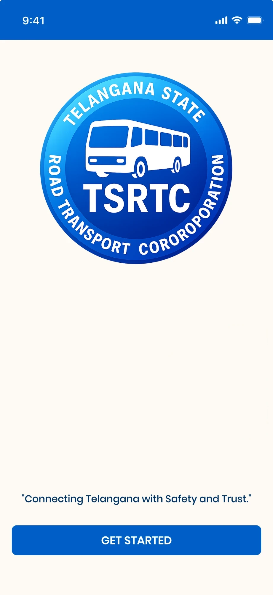

Start
A calm, branded start
The splash shows the TSRTC identity, a short promise, “Connecting Telangana with Safety and Trust.”, and one clear action: Get started. A bus drives in, so the app feels alive from the first second.
